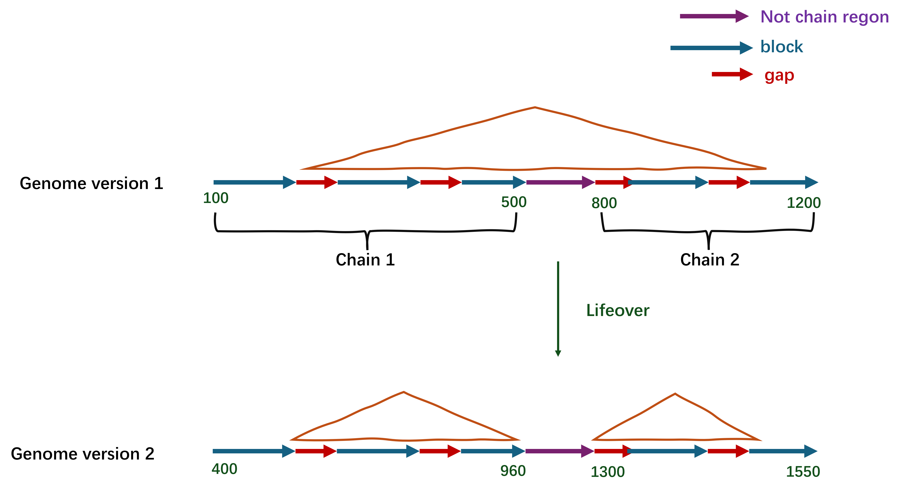
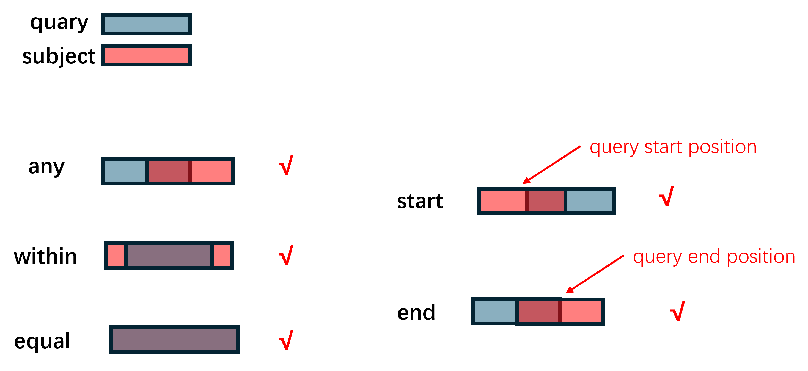
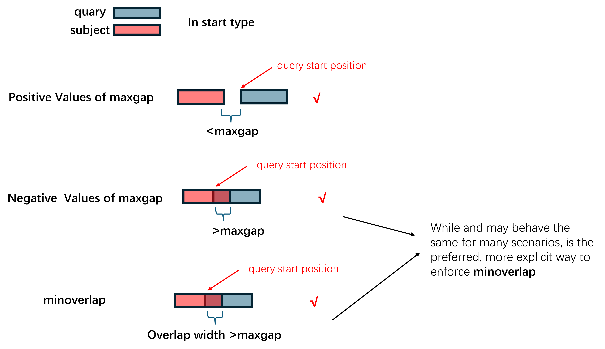
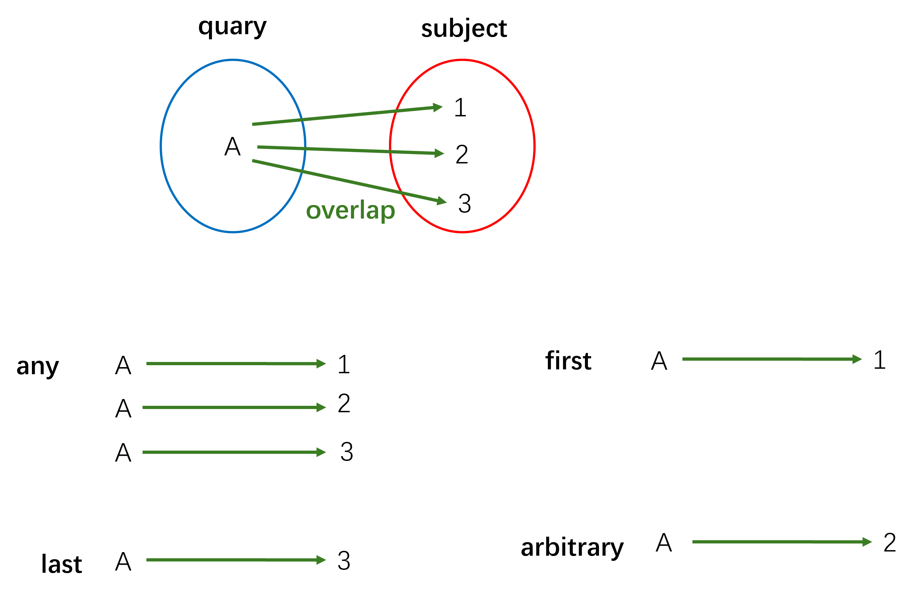
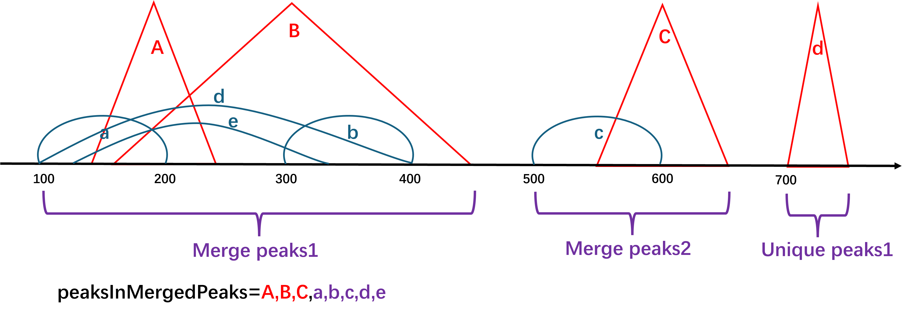

Preface
Analysis_of_peak_downstream are consist of three parts
Genome Coordinate Conversion,
Peak overlap
peak Annotation, Comparison and Visualization
Genome Coordinate Conversion Preface
When conducting research, we need to unify the genome coordinate system. The process of converting from one version of the coordinate system to another is called liftover(UCSC) or crossmap (Ensembl).
The UCSC and Ensembl provides a ready-to-use web version:
Ensembl web version (Only support species: human, mouse, Caenorhabditis elegans, Saccharomyces cerevisiae, Zebrafish)
Peak overlap Preface
This part about how to find overlaps of peaks?
First, we use the peak files to create
GRangesobjects.findOverlaps(): CreatingNCListandGNCListobjects to find the overlaps between two "range-based" objects.findOverlapsOfPeaks(): UsingfindOverlaps()—another version for peaks.makeVennDiagram(): Making Venn Diagram for peaks.
Peak Annotation, Comparison and Visualization Preface
This part about ChIPseeker usage, an R package for peak Annotation, Comparison and Visualization
If two ChIP Seq data, obtained by two different binding proteins, overlap significantly, these two proteins may form a complex or have interaction in regulation chromosome remodelling or gene expression.
ChIPseekersupport statistical testing of significant overlap among ChIP seq data sets, and incorporate open access database GEO (contains 17,000 bed file) for users to compare their own dataset to those deposited in databaseConverting genome coordinations from one genome version to another is also supported
Basic knowledge
0-base or 1-base？
在0-based坐标系中，起始位置从 0 开始计数，范围是 [start, end) ，即 end 位置不包含在区间内。
在1-based坐标系中，起始位置从 1 开始计数，范围是 [start, end] ，即 end 位置包含在区间内。
| 文件格式 | 坐标系统 | 说明 |
|---|---|---|
| BED (UCSC) | 0-based | [start, end) |
| GTF/GFF (Ensembl) | 1-based | [start, end] |
| VCF (Ensembl) | 1-based | 变异位点坐标从 1 开始，不是区间，而是单个碱基的位置 |
| BAM/SAM | 1-based | 比对起始位置为 1-based，CIGAR 操作的结果确定终止位置 |
| LiftOver | 0-based | 输入文件通常是 0-based（如 BED） |
| CrossMap | 根据输入格式 | 支持多种格式，如 BED（0-based）、GTF/GFF/VCF（1-based） |
GRCh38 vs hg38 or mRatBN7.2 vs rn7?
GRCh38 vs hg38
GRCh38: The Human Reference Genome maintained by the Genome Reference Consortium (GRC) is the 38th edition of the Genome Reference Consortium Human series.
hg38: indicates the GRCh38 version used by UCSC
Same😀😀
GRCh38 and hg38 share the same genome sequence, so most of the coordinates are identical
Different🥸🥸
UCSC uses the UCSC-specific mitochondrial genome (chrM) in hg38, while GRCh38 may use a different mitochondrial version (such as rCRS or GRCh38_MT).
UCSC has added alternate haplotypes in hg38
What is the Haplotype Patches or alternate haplotypes ?
单倍型补丁（Haplotype Patches）
chr1 1000000 1000500 region_A 100 +chr1 2000000 2000600 region_B 200 -chr1_KI270706v1_random 50000 50500 patch_region 150 +chr1_KI270706v1_random 是 单倍型补丁，用于修复 chr1 上某个复杂区域的问题。
这些补丁的坐标通常是独立的，它们不会直接与主染色体坐标系对应（即 chr1 和 chr1_KI270706v1_random 可能是相互独立的）
替代单倍型（Alternate Haplotypes）
xxxxxxxxxxchr6 3000000 3000500 MHC_region_ref 500 +chr6_GL000256v2_alt 3000000 3000500 MHC_region_alt 500 +chr6 是标准染色体的 MHC （Major Histocompatibility Complex, 主要组织相容性复合体）(负责编码细胞表面的分子，用于抗原呈递和免疫系统识别)（主参考序列）。
chr6_GL000256v2_alt 是 MHC 替代单倍型（alt haplotype），用于提供该区域的另一种版本，表示在不同人群中可能存在的变异。
mRatBN7.2 vs rn7
It's the same version of the genome, just from a different database
mRatBN7.2 from Ensemble
rn7 from UCSC
Conclusion
| 特性 | mRatBN7.2 | rn7 | GRCh38 | hg18 |
|---|---|---|---|---|
| 数据来源 | Wellcome Sanger Institute / Ensembl | UCSC Genome Browser | Genome Reference Consortium (GRC) | UCSC Genome Browser |
| 发布机构 | Ensembl | UCSC | GRC / Ensembl | UCSC |
| 染色体命名 | 1, 2, X, Y, MT | chr1, chr2, chrX, chrY, chrM | 1, 2, X, Y, MT | chr1, chr2, chrX, chrY, chrM |
| 坐标系统 | 1-based | 1-based | 1-based | 1-based |
| 单倍型补丁 (Alternate Haplotypes) | 有（Ensembl 也使用） | UCSC 可能有不同的命名方式 | 有（与 Ensembl 一致） | 无 |
GRanges and IRanges objects
The central feature of GenomicRanges is the GRanges and IRanges(IntegerRanges) object, which represents genomic intervals.
GRanges objects
Each
GRangesobject can include the followingcomponents:Chromosome Names (
seqnames)StartandEndPositions (ranges)StrandInformationPositive strand:
+Negative strand:
-Unspecified strand:
*
Additional Metadata(
score,Annotations,Other custom attributes)
Create the GRanges object
x# loading package# processing genomic data.library(rtracklayer)
# create two GRanges objectquery <- GRanges(seqnames = c("chr1","chr1","chr1"), ranges = IRanges(start = c(100, 300, 500), end = c(200, 400, 600), names=c("a","b","c")), score = c(10, 20, 30), strand="+")
subject <- GRanges(seqnames = c("chr1", "chr1", "chr2"), ranges = IRanges(start = c(150, 175, 550), end = c(250, 450, 650), names=c("A","B","C")), score = c(20, 40, 20), strand="+")Check the GRanges object
xxxxxxxxxx# check the GRanges objectquerysubjectxxxxxxxxxxGRanges object with 3 ranges and 1 metadata column: seqnames ranges strand | score <Rle> <IRanges> <Rle> | <numeric> a chr1 100-200 + | 10 b chr1 300-400 + | 20 c chr1 500-600 + | 30 ------- seqinfo: 1 sequence from an unspecified genome; no seqlengthsGRanges object with 3 ranges and 1 metadata column: seqnames ranges strand | score <Rle> <IRanges> <Rle> | <numeric> A chr1 150-250 + | 20 B chr1 175-450 + | 40 C chr2 550-650 + | 20 ------- seqinfo: 2 sequences from an unspecified genome; no seqlengthsYou can use bed file as input to creat GRanges objects
xxxxxxxxxxpeak1 <- toGRanges("peak1.bed", format="BED")peak2 <- toGRanges("peak2.bed", format="BED")IRanges objects
IRanges(IntegerRanges) lack the information ofseqnamesandstrandand add the width information comparing toGRanges
xxxxxxxxxx# 创建 IRanges 对象ir <- IRanges(start = c(1, 3, 20), end = c(13, 7, 25))
# 查看对象irxxxxxxxxxxIRanges object with 3 ranges and 0 metadata columns: start end width <integer> <integer> <integer> [1] 1 13 13 [2] 3 7 5 [3] 20 25 6NCList and GNCList objects
如果query中有
NCList通过分区和排序，嵌套分组，这样，每次搜索时只需要在相关层次中寻找，而不需要扫描所有区间
xxxxxxxxxx<img src="./picture/005.png" width="700"/><br><br>
GNCList是NCList的扩展版本，专门用于处理带有基因组序列名称（seqnames）的范围对象。
xxxxxxxxxx| 特性 | `NCList` | `GNCList` || -------- | -------------- | ---------------------------- || **适用范围** | 无染色体信息，仅处理一般范围 | 适用于带有染色体（`seqnames`）信息的基因组范围 || **分组** | 无需分组，仅使用嵌套结构 | 按染色体分组，每个组内使用 NCList || **性能** | 适用于小型范围数据 | 针对大型基因组数据优化，避免跨染色体比较 |
findOverlaps()和countOverlaps()会自动对 subject 创建NCList和GNCList，以优化重叠计算的效率。用户通常无需手动构建NCList和GNCList。
xxxxxxxxxx# creat nclist and gnclist
# 当你处理像环状染色体（如线粒体 DNA）数据时# circle.length定义了“环长# 当区间超出边界时，使用 circle.length 可以让区间“回到起点”，模拟环状数据nclist <- NCList(ir, #circle.length=NA_integer_ )
gnclist <- GNCList(subject)
nclistgnclistxxxxxxxxxxNCList object with 3 ranges and 0 metadata columns: start end width <integer> <integer> <integer> [1] 1 13 13 [2] 3 7 5 [3] 20 25 6GNCList object with 3 ranges and 1 metadata column: seqnames ranges strand | score <Rle> <IRanges> <Rle> | <numeric> A chr1 150-250 + | 20 B chr1 175-450 + | 40 C chr2 550-650 + | 20 ------- seqinfo: 2 sequences from an unspecified genome; no seqlengthsTxDb and EnsDb
TxDb object
TxDb(Transcript Database) is a object provided by Bioconductor for storing annotation information of genomesyou can download from
Bioconductor
xxxxxxxxxx```R# loading packageslibrary(AnnotationHub)# downland AnnotationHub databaseAH <- AnnotationHub()# Query all available Txdb databasesquery(AH , "Txdb.Rnorvegicus.UCSC.rn6")``````textAnnotationHub with 6 records# snapshotDate(): 2024-10-28# $dataprovider: UCSC# $species: Rattus norvegicus# $rdataclass: TxDb# additional mcols(): taxonomyid, genome, description, coordinate_1_based, maintainer,# rdatadateadded, preparerclass, tags, rdatapath, sourceurl, sourcetype# retrieve records with, e.g., 'object[["AH52270"]]'titleAH52270 | TxDb.Rnorvegicus.UCSC.rn6.refGene.sqliteAH53781 | TxDb.Rnorvegicus.UCSC.rn6.refGene.sqliteAH61799 | TxDb.Rnorvegicus.UCSC.rn6.refGene.sqliteAH66179 | TxDb.Rnorvegicus.UCSC.rn6.refGene.sqliteAH70598 | TxDb.Rnorvegicus.UCSC.rn6.refGene.sqliteAH84143 | TxDb.Rnorvegicus.UCSC.rn6.ncbiRefSeq.sqlite```<br>
According to AH ID to downland database
xxxxxxxxxx# According to AH ID to downland database# A larger AH ID indicates a newer version.TxDb <- AH[["AH70598"]]
you can use
GFF/GTFto buildTxDbobject
xxxxxxxxxx<img src="./picture/013.jpg" width="700"/>```R# loading packageslibrary(GenomicFeatures)# makeTxDbTxDb <- makeTxDbFromGFF("./Rattus_norvegicus.mRatBN7.2.113.gtf")```
EnsDb
我们还可以使用 **Ensembl-based
EnsDb注释数据库（由 ensembldb 包提供）作为TxDbobjects 进行输入但需要用
seqlevelsStyle()对染色体名称进行转换
| 特性 | EnsDb | TxDb |
|---|---|---|
| 数据来源 | Ensembl数据库的基因组注释数据 | 多种注释源（如UCSC、NCBI） |
| 数据内容 | 基因、转录本、外显子、CDS等全面信息 | 主要包含转录本信息，如外显子、内含子 |
| 适用场景 | 基因组级别的分析，特别是Ensembl注释 | 转录本分析，关注转录本结构与功能 |
xxxxxxxxxx# loading packageslibrary(ensembldb)
# downland AnnotationHub databaseAH <- AnnotationHub()
# Query all available Txdb databases# This 113 is the version number for the EnsDb databasequery(AH, "113 EnsDb for Rattus norvegicus")
# According to AH ID to downland databaseedb <- AH[["AH119437"]]
# Change the chromosome names to UCSC styleseqlevelsStyle(edb) <- "UCSC"GFF(GFF3) and GTF(GTF2)
GFF(GFF3)
GFF(General Feature Format)是一种用来描述基因组特征的文件现在我们所使用的大部分都是第三版（
[GFF3](https://gmod.org/wiki/GFF3)）xxxxxxxxxxctg123 . mRNA 1300 9000 . + . ID=mrna0001;Name=sonichedgehogctg123 . exon 1300 1500 . + . ID=exon00001;Parent=mrna0001ctg123 . exon 1050 1500 . + . ID=exon00002;Parent=mrna0001ctg123 . exon 3000 3902 . + . ID=exon00003;Parent=mrna0001ctg123 . exon 5000 5500 . + . ID=exon00004;Parent=mrna0001ctg123 . exon 7000 9000 . + . ID=exon00005;Parent=mrna0001列名 描述 seqid 参考序列的 ID source 该特征的来源，未知时用 .代替type 特征类型，如 gene、exon、CDS等，建议使用 SO 术语start 起始坐标（1-based） end 终止坐标 score 量化得分，空值用 .代替strand +表示正链，-表示负链，.表示无方向要求phase CDS 需要此列，当前 CDS 片段的起始碱基在密码子中的偏移量。它的值可以是 0、1 或 2 attributes 属性列表，格式为 key=value，不同属性用;分隔
GTF (GTF2)
GTF(gene transfer format)，主要是用来对基因进行注释当前所广泛使用的GTF格式为第二版（
GTF2）xxxxxxxxxxAB000381 Twinscan CDS 700 707 . + 2 gene_id "AB000381.000"; transcript_id "AB000381.000.1";AB000381 Twinscan exon 900 1000 . + . gene_id "AB000381.000"; transcript_id "AB000381.000.1";AB000381 Twinscan start_codon 380 382 . + 0 gene_id "AB000381.000"; transcript_id "AB000381.000.1";AB000381 Twinscan stop_codon 708 710 . + 0 gene_id "AB000381.000"; transcript_id "AB000381.000.1";列名 描述 seqname 序列 ID，通常是染色体 ID 或 Contig ID source 该特征的来源，未知时用 .代替type 特征类型，特征类型，如 CDS、start_codon(起始密码子)、stop_codon（终止密码子） （这一列必须注明）start 起始坐标（1-based） end 终止坐标 score 量化得分，空值用 .代替strand +表示正链，-表示负链，.表示无方向要求frame 读码框（0、1 或 2，仅适用于 CDS）attributes 其他信息（键值对， key "value";格式）
Different from GFF of GTF
| 对比项 | GFF3 | GTF2 |
|---|---|---|
| type/feature | 必须注明 | 可以是任意名称 |
| attributes | key=value | key "value" |
| attributes 层级 | 明确层级关系（gene → mRNA → exon/CDS） | 层级关系相对不严格 |
| 支持的特征 | 更丰富（gene, mRNA, exon, CDS, ncRNA, repeat_region 等） | 主要针对转录组数据（gene, transcript, exon, CDS） |
Genome Coordinate Conversion
Loading package
xxxxxxxxxx# Delete all objectsrm(list = ls())
# Loading packagelibrary(R.utils) # enhance the basic functions of R.library(rtracklayer) # processing genomic data.library(dplyr) # Data Processing and OperationsProcessing data
Processing bed file as GRanges (GRanges objects as input in liftOver()
you can import bed file as dataframe to create
GRangesobject(Recommend)。You should modify the chromosome names to conform to the genome format (e.g., 1 should become chr1) UCSC use chr1 and chrM and version
xxxxxxxxxx# import bed file as dataframebed_data <- read.csv(file = "./Demo0625.csv")# remove duplicatebed_data <- bed_data %>% distinct(bed_data$name,.keep_all = TRUE)# create GRanges objectsquery <- GRanges(seqnames = bed_data$chr,ranges = IRanges(start = bed_data$start,end = bed_data$end,names=bed_data$name),score = bed_data$fold_enrichment,strand="*")# 修改染色体名称seqlevelsStyle(query) <- "UCSC"queryxxxxxxxxxxGRanges object with 10714 ranges and 1 metadata column:seqnames ranges strand | score<Rle> <IRanges> <Rle> | <numeric>KChIP2_peak_3 chr1 1193628-1193990 * | 3.49474KChIP2_peak_4 chr1 1670780-1671341 * | 6.46071KChIP2_peak_6 chr1 1784527-1784797 * | 4.72403KChIP2_peak_7 chr1 1803427-1803932 * | 3.62225KChIP2_peak_8 chr1 1925707-1926101 * | 2.62105... ... ... ... . ...KChIP2_peak_21434 chrX 158978724-158979272 * | 4.24629KChIP2_peak_21436 chrX 159126572-159127036 * | 3.43400KChIP2_peak_21437 chrX 159157346-159157724 * | 3.72489KChIP2_peak_21438 chrX 159428723-159429014 * | 2.62105KChIP2_peak_21441 chrX 159890957-159891282 * | 2.62105-------seqinfo: 22 sequences from an unspecified genome; no seqlengthsyou can use
import()function to directly import bed file as GRange object(NOT recommend)。xxxxxxxxxxquery <- import("./Demodata.bed")
Chain file
Chain file is a file format used to represent sequence alignments between different genome assemblies of the same species or between different species.
Loading chain file
UCSC chain file download web (Recommend) (choose species ------choose genome version-----choose LifeOver files)
Ensembl chain file download web (Only have human and mouse)
xxxxxxxxxx# decompressing chain fileif (file.exists("rn6ToRn7.over.chain")) { print("文件解压成功！")} else { gunzip("rn6ToRn7.over.chain.gz") print("文件重新解压完成。")}
# read chain filechain_file <- import.chain("rn6ToRn7.over.chain")Structure of chain file
A chain file is generated by alignment two genomes
chain file里面包含许多块chain(同源的地方)
xxxxxxxxxx- each **chain** represents an alignment between two genomic regions<br><br>- 其中每块**chain** 由**Header Line** 和 **Alignment Data Lines**组成<br><br>- 第一行`Header Line`记录**chain**在两个版本中坐标，<br><br>- 后面许多行`alignment data line`记录具体比对情况。```textchain 4900 chrY 58368225 + 25985403 25985638 chr5 151006098 - 43257292 43257528 19 1 010 0 561 4 016 0 442 3 016 0 814 1 03 7 048chain 4900 chrY 58368225 + 25985406 25985566 chr5 151006098 - 43549808 43549970 216 0 260 4 010 0 4```
Header Line
xxxxxxxxxxchain score tName tSize tStrand tStart tEnd qName qSize qStrand qStart qEnd id score-- chain score （How well the two sequences allign）tName-- chromosome (reference/target sequence)tSize-- chromosome size (reference/target sequence)tStrand-- strand (reference/target sequence)tStart-- alignment start position (reference/target sequence)tEnd-- alignment end position (reference/target sequence)qName-- chromosome (query sequence)qSize-- chromosome size (query sequence)qStrand-- strand (query sequence)qStart-- alignment start position (query sequence)qEnd-- alignment end position (query sequence)id-- chain ID
Alignment Data Lines
xxxxxxxxxxsize dt dq Alignment Data Lines 将 chain分成许多个 block(一致的区域)(对齐块)，每一行代表一个block
size-- the size of the ungapped alignment (block)dt-- the difference between the end of this block and the beginning of the next block (reference/target sequence)dq-- the difference between the end of this block and the beginning of the next block (query sequence)
xxxxxxxxxx chain 4900 chrY 58368225 + 25985406 25985566 chr5 151006098 - 43549808 43549970 2 16 0 2 60 4 0 10 0 4 70
Genome Coordinate Conversion
We can use function of liftOver() to transformGenome Coordinate Conversion in R
xxxxxxxxxx# liftoversubject <- liftOver(query, chain_file)
# convert to dataframe subject_data <- as.data.frame(subject)
Merge separate peaks
Filter and merge peaks by setting
distance_thresholdandminimum_width这个
distance_threshold与minimum_width值需要自己把握，需要根据实际情况进行判断**这个方法是我一时半了想出来，如果有好的想法可以进行添加与修改。 


Per setting
xxxxxxxxxx# setting distance_threshold (base)distance_threshold <- 30
# setting minimum width of peaks (base)minimum_width <- 30Function of merge peaks by group
We made a merge_peaks_by_groupfunction to merge peaks by same group
xxxxxxxxxxmerge_peaks_by_group <- function(df, distance_threshold) { df %>% group_by(group) %>% # 按 group 分组 filter(n_distinct(seqnames) == 1) %>% # 只保留同一组内染色体相同的行 arrange(group, start) %>% # 按照 start 位置排序 mutate( dist_to_prev = start - lag(end, default = first(end)) # 增加dist_to_prev这列，其为当前 start 和前一个 peak 的 end 之间的距离 ) %>% ungroup() %>% # 取消分组，以便下一步操作 mutate( merge_group = cumsum(dist_to_prev > distance_threshold | is.na(dist_to_prev)) # 增加merge_group列，如果距离大于阈值，增加1（不合并） ) %>% group_by(group, merge_group) %>% # 按照 group 和新的merge_group进行分组 summarise( group_name = first(group_name), # 保留第一个 group_name seqnames = first(seqnames), start = min(start), # 取最小的 start end = max(end), # 取最大的 end width = end - start+1, # 计算新的 width strand = first(strand), # 保留第一个 strand score = first(score), # 保留第一个 score .groups = "drop" # 去掉分组结构 )}Use merge_peaks_by_groupfunction
xxxxxxxxxxmerge_peaks_subject <- merge_peaks_by_group(subject_data,distance_threshold)Remove narrow width of peaks
Evaluate the change in width after
liftOverto assess the quality of merged peakspeak whose width increases too much after
liftOveris removed
xxxxxxxxxx# Extract original widthbefore_width <- bed_data[,c(22,4)]colnames(before_width) <- c("group_name","before_width")
# merge original width merge_peaks_subject <- merge(merge_peaks_subject,before_width,by.x="group_name",by.y="group_name")
# calculate the change in width after liftOver to assess the qualitymerge_peaks_subject$width_change <- merge_peaks_subject$width/merge_peaks_subject$before_width*100
# remove narrow width of peaksmerge_peaks_subject <- filter(merge_peaks_subject,merge_peaks_subject$width>=minimum_width)Peak overlap
Loading package
xxxxxxxxxx# Delete all objectsrm(list = ls())
# Loading packagelibrary(GenomicRanges)library(ChIPpeakAnno)GenomicRanges是R语言中一个强大而灵活的生物信息学包，主要用于处理基因组区间数据ChIPpeakAnno是一个专注于 ChIP-seq 数据分析的 R 包，广泛用于分析和注释染色质免疫沉淀 (ChIP) 实验检测的峰数据。它提供了一系列强大的工具，用于峰重叠分析、基因注释、功能富集分析和可视化等。
Find the overlaps
findOverlaps()和countOverlaps()会自动对 subject 创建 NCList和GNCList，以优化重叠计算的效率。用户通常无需手动构建 NCList和GNCList。
findOverlaps()
We use findOverlaps() to find the overlaps
xxxxxxxxxx# creat two GRanges objectquery <- GRanges(seqnames = c("chr1","chr1","chr1"), ranges = IRanges(start = c(100, 300, 500), end = c(200, 400, 600), names=c("a","b","c")), score = c(10, 20, 30), strand="+")
subject <- GRanges(seqnames = c("chr1", "chr1", "chr2"), ranges = IRanges(start = c(150, 175, 550), end = c(250, 450, 650), names=c("A","B","C")), score = c(20, 40, 20), strand="+")xxxxxxxxxxhits <- findOverlaps(query, # query GRanges object subject, # subject GRanges object type="any", #minoverlap=1, # 两个区域之间的最小重叠碱基数 #maxgap=0, # 允许重叠区域之间的最大间隙 ignore.strand= F, # F means strand ising considered select="all", # invert=TRUE #If True, keep only the ranges in x that do not overlap ranges )typeany: 认为query和subject存在任意的重合即认为发生了重叠（deafult）within: 认为query只有完全在subject内才认为是重叠start: 认为query中的start位置在subjectt内才认为是重叠end: 认为query中的end位置在subject内才认为是重叠equal：认为query中的start，end与subject完全相同才认为是重叠When type is "
any", at least one of maxgap and minoverlap must be set to its default value. 
maxgap and minoverlapPositive Values of maxgap：if
maxgap = 50, two ranges can be up to 50 base pairs apart and still be considered overlappingNegative Values of maxgap： if
maxgap = -20, the two ranges must overlap by at least 20 base pairs.minoverlap：**Only ranges with a minimum ofminoverlapoverlapping positions are considered to be overlapping. 
selectall: Return all overlaps (default).first: Return the first overlap for each query rangelast: Return the last overlap for each query rangearbitrary: Return one arbitrary overlap for each query range 
hits objects
The function of
findoverlaps()function will creathits** objects**
xxxxxxxxxx<img src="./picture/009.png" width="300"/>
xxxxxxxxxxhitsxxxxxxxxxxHits object with 3 hits and 0 metadata columns: queryHits subjectHits <integer> <integer> [1] 1 1 [2] 1 2 [3] 2 2 ------- queryLength: 3 / subjectLength: 3We can use
countQueryHits()extracting numbers of overlap of query range UsingcountSubjectHits()extracting numbers of overlap of subject range
xxxxxxxxxx```r# QuerycountQueryHits(hits)setNames(countQueryHits(hits), seqnames(subject))# subjectcountSubjectHits(hits)setNames(countSubjectHits(hits), seqnames(subject))```
xxxxxxxxxx```text[1] 2 1 0chr1 chr1 chr22 1 0[1] 1 2 0chr1 chr1 chr21 2 0```
Using
overlapsRanges()to check the Specific range of overlaps
xxxxxxxxxxGenomicRanges::intersect(query, subject)xxxxxxxxxxGRanges object with 2 ranges and 0 metadata columns: seqnames ranges strand <Rle> <IRanges> <Rle> [1] chr1 150-200 + [2] chr1 300-400 + ------- seqinfo: 2 sequences from an unspecified genome; no seqlengthscountOverlaps()
countOverlaps()可以直接查看query与subject重叠的数目countOverlaps()占用的内存非常少，再快速查看重叠数目非常有用countOverlaps()用法与findOverlaps一样
xxxxxxxxxxoverlap_counts <- countOverlaps(query, subject)overlap_countsxxxxxxxxxxa b c 2 1 0Extract the overlapping peaks
The function of pintersect() find the overlapping portion of each range in one set with its paired range in other set
xxxxxxxxxx# Extract overlapping rangesoverlap_ranges <- pintersect(query[queryHits(hits)], subject[subjectHits(hits)])
# caulating the mean scoremean_scores <- rowMeans(cbind( query$score[queryHits(hits)], subject$score[subjectHits(hits)]))
# # Add the mean scores as metadata to the overlap rangesoverlap_ranges$score <- mean_scores
overlap_rangesxxxxxxxxxxGRanges object with 3 ranges and 2 metadata columns: seqnames ranges strand | score hit <Rle> <IRanges> <Rle> | <numeric> <logical> a chr1 150-200 + | 15 TRUE a chr1 175-200 + | 25 TRUE b chr1 300-400 + | 30 TRUE ------- seqinfo: 1 sequence from an unspecified genome; no seqlengthsFind Overlaps with ≥50%(threshold)
xxxxxxxxxx# setting the thresholdthreshold=0.5
# exact the overlap_widthsoverlap_widths <- width(overlap_ranges)
# Calculate widths of query and subject rangesquery_widths <- width(query[queryHits(hits)])subject_widths <- width(subject[subjectHits(hits)])
# Filter overlaps with at least threshold overlapkeep <- (overlap_widths / query_widths >= threshold) | (overlap_widths / subject_widths >= threshold)
# Subset the overlapsthreshold_hits <- hits[keep]
# Extract the filtered intersected rangesthreshold_overlap_ranges <- pintersect(query[queryHits(threshold_hits)], subject[subjectHits(threshold_hits)])
# check the resultthreshold_overlap_rangesxxxxxxxxxxGRanges object with 2 ranges and 2 metadata columns: seqnames ranges strand | score hit <Rle> <IRanges> <Rle> | <numeric> <logical> a chr1 150-200 + | 10 TRUE b chr1 300-400 + | 20 TRUE ------- seqinfo: 1 sequence from an unspecified genome; no seqlengthsfindOverlapsOfPeaks()
findOverlapsOfPeaks()是ChIPpeakAnno包提供的一个函数，用于在峰文件中查找多个组间的重叠区域，用法类似于findOverlaps()findOverlapsOfPeaks()相比findOverlaps()支持Vene图可视化，peak注释，peak可视化等功能。findOverlapsOfPeaks()会生成一个overlappingPeakslist.
xxxxxxxxxxquery <- GRanges(seqnames = c("chr1","chr1","chr1","chr1","chr1"), ranges = IRanges(start = c(100, 300, 500, 100, 135), end = c(200, 400, 600, 400, 334), names=c("a","b","c","d","e")), score = c(10, 20, 30, 24, 32), strand="+")
subject <- GRanges(seqnames = c("chr1", "chr1","chr1","chr1"), ranges = IRanges(start = c(150, 175, 550,700), end = c(250, 450, 650,750), names=c("A","B","C","D")), score = c(20, 40, 20,30), strand="+")xxxxxxxxxxoverlappingPeaks <- findOverlapsOfPeaks(query, subject, maxgap=0, # 允许重叠区域之间的最大间隙 minoverlap=0.5, # 两个区域之间的最小重叠百分比 ignore.strand= F, # F means strand ising considered connectedPeaks="keepAll")值得注意：这里的
minoverlap与findOverlaps()不同：findOverlaps()指最小重叠base pairs。这里指的是的是overlap最小百分比(0 <minoverlap< 1)
connectedPeaks:if 5 peaks in query overlap with 2 peaks in subject
setting it to
mergewill add 1 to theCountssetting it to
keepAllwill add 5 peaks tocount.query, 2 tocount.subject, and 2 toCountssetting it to
minwill add 2 to theCounts
这里的
Counts是指overlappingPeakslist 中的venn_cntobject，用于韦恩图画图用xxxxxxxxxxoverlappingPeaks[["venn_cnt"]]xxxxxxxxxxquery subject Counts count.query count.subject[1,] 0 0 0 0 0[2,] 0 1 1 0 1[3,] 1 0 0 0 0[4,] 1 1 3 5 3attr(,"class")[1] "VennCounts"
count.query在 query 中有多少个peaks与 subject 中的peaks发生了重叠。count.subject在 subject 中有多少个peaks与 query 中的peaks发生了重叠。Counts在keepAll与min指count.query与count.subject最小值，在merge指是将重叠的peaks合并为一个单一计数的结果。

overlappingPeaks list
overlappingPeaks list 由以下objects构成
venn_cnt: an object ofVennCounts，用于韦恩图画图用peaklist： a list ofGRangesobject which contain all overlapping peaks or unique peaksuniquePeaks：an object ofGRangesconsists of all unique peaksmergedPeaks： an object ofGRangesconsists of all merged overlapping peakspeaksInMergedPeaks： an object ofGRangesconsists of all peaks in each samples involved in the overlapping peaksoverlappingPeaks： a list of data frame consists of the annotation of all the overlapped peaksall.peaks： a list ofGRangesobject which contain the input peaks with formated rownames.

Draw a vennDiagram
makeVennDiagram()from packages ofChIPpeakAnnomakeVennDiagram():Making Venn Diagram from two or more peak ranges, Also calculate p-value to determine whether those peaks overlap significantly.
xxxxxxxxxx# per setting# colorcol = rainbow(2)xxxxxxxxxxVennDiagram <- makeVennDiagram( Peaks = list(query, subject), NameOfPeaks = c("query", "subject"), maxgap = 0L, # 允许重叠区域之间的最大间隙 minoverlap = 0.5, # 两个区域之间的最小重叠百分比 totalTest = 1000, # 设置总测试次数，用于计算 p 值，It should be much larger than the number of peaks in the largest peak set. by = "region", ignore.strand = T, connectedPeaks = "merge", method = "hyperG", # TxDb = TxDb # TxDb objects plot = TRUE, # a venn diagram is plotted # venn plot setting alpha= 0.3, # 透明度 scaled = T, # 根据比例显示大小 lwd=1, # 圆圈线条粗细 lty=1, # 圆圈线条形状: 1 实线, 2 虚线 col=col, #圆圈线条颜色: blank无线条 fill= col, # fill color # numeric labels cex = 1, # Size label.col ='black', # color fontface = "bold", # 字体粗细；加粗bold
# category labels cat.cex = 1, # Size cat.dist = 0.02, # 标签距离圆圈的远近 cat.pos = -180, # 标签相对于圆圈的角度cat.pos = c(-10, 10, 135) cat.fontface = "bold", # 标签字体加粗 cat.default.pos = "text" # 标签位置, outer内;text 外)
byfeature: means using feature field (such as Promoter, exon) for calculating overlapregion(default): means using chromosome range for calculating overlap,base: means calculating overlap in nucleotide level.
connectedPeaks这里的
connectedPeaks多了一个参数：keepFirstListConsistentwill keep the counts consistent with first list.method：method to be used for p value calculationhyperG（超几何检验）：超几何分布会计算出随机情况下抽中某个重叠的概率。permutation（置换检验）：你将这些数据打乱多次（如：将 query 和 subject 中的峰随机分配到整个 1000个区间），每次都计算一次重叠情况。然后，你比较原始数据的重叠和这些随机打乱后的重叠结果。如果原始数据的重叠结果比打乱后的结果显著（即更极端或更大），那么说明重叠结果是显著的，不太可能是偶然的。
peak Annotation, Comparison and Visualization
Loading packages
xxxxxxxxxx# Delete all objectsrm(list = ls())
# Loading packageslibrary(ChIPseeker) # for ChIP peak Annotation, Comparison and Visualizationlibrary(dplyr) # Data Processing and Operationslibrary(rtracklayer) # processing genomic datalibrary(ggplot2) # Data Visualizationlibrary(org.Rn.eg.db) # wide annotation database of Genome,choise your specieslibrary(AnnotationHub) # Query the annotation databaselibrary(clusterProfiler) # enrichment analysis
library(knitr) # for creating tables in RMarkdownlibrary(kableExtra) # for enhancing table stylinglibrary(reactable) # beautiful tableDate processing
xxxxxxxxxx# 定义BED文件路径和peak namebed_files <- c("./Demo0625.csv", "./Demo1011.csv")peak_name <- c("peak0625", "peak1011")
# 初始化一个空列表，用于存储每个文件的GRanges对象peak_list <- list()
# 循环加载每个BED文件并转换为GRanges对象for (i in seq_along(bed_files)) { # 读取BED文件 bed_data <- read.csv(file = bed_files[i]) # 去除重复行 bed_data <- bed_data %>% distinct(name, .keep_all = TRUE) # 创建GRanges对象 peak <- GRanges( seqnames = bed_data$chr, ranges = IRanges( start = bed_data$start, end = bed_data$end, names = bed_data$name ), score = bed_data$fold_enrichment, strand = "*" ) # 修改染色体名称 seqlevelsStyle(peak) <- "UCSC" # 将GRanges对象添加到列表中，并使用对应的peak_name命名 peak_list[[peak_name[i]]] <- peak rm(peak) rm(bed_data)}
# 查看结果peak_listxxxxxxxxxx$peak0625GRanges object with 10714 ranges and 1 metadata column: seqnames ranges strand | score <Rle> <IRanges> <Rle> | <numeric> KChIP2_peak_3 chr1 1193628-1193990 * | 3.49474 KChIP2_peak_4 chr1 1670780-1671341 * | 6.46071 KChIP2_peak_6 chr1 1784527-1784797 * | 4.72403 KChIP2_peak_7 chr1 1803427-1803932 * | 3.62225 KChIP2_peak_8 chr1 1925707-1926101 * | 2.62105 ... ... ... ... . ... KChIP2_peak_21434 chrX 158978724-158979272 * | 4.24629 KChIP2_peak_21436 chrX 159126572-159127036 * | 3.43400 KChIP2_peak_21437 chrX 159157346-159157724 * | 3.72489 KChIP2_peak_21438 chrX 159428723-159429014 * | 2.62105 KChIP2_peak_21441 chrX 159890957-159891282 * | 2.62105 ------- seqinfo: 22 sequences from an unspecified genome; no seqlengths
$peak1011GRanges object with 10019 ranges and 1 metadata column: seqnames ranges strand | score <Rle> <IRanges> <Rle> | <numeric> KChIP2-OE_peak_2 chr1 747955-748316 * | 2.84924 KChIP2-OE_peak_5 chr1 1671192-1671604 * | 3.73480 KChIP2-OE_peak_6 chr1 1767207-1767799 * | 4.68312 KChIP2-OE_peak_7 chr1 1944415-1944899 * | 5.71260 KChIP2-OE_peak_8 chr1 1952088-1952383 * | 2.84924 ... ... ... ... . ... KChIP2-OE_peak_22997 chrX 159037695-159038091 * | 4.70768 KChIP2-OE_peak_22999 chrX 159437682-159437965 * | 3.56155 KChIP2-OE_peak_23001 chrX 159816201-159816424 * | 3.56155 KChIP2-OE_peak_23002 chrX 159890739-159891449 * | 4.27386 KChIP2-OE_peak_23003 chrY 525379-525712 * | 2.84924 ------- seqinfo: 23 sequences from an unspecified genome; no seqlengthsLoading Txdb
Txdb detail you can see 🪨[[#TxDb and EnsDb]] 🔗TxDb and EnsDb
xxxxxxxxxx# downland AnnotationHub databaseAH <- AnnotationHub()
TxDb <- AH[["AH70598"]]Peaks coverage plot
After peak calling, we would like to know the peak locations over the whole genome
xxxxxxxxxx```rcovplot(peak_list[[1]], weightCol="score")```<img src="./picture/015.jpg" width="600"/>
we can check peak locations of region of the chromosome
xxxxxxxxxx```rcovplot(peak_list[[1]], weightCol="score", chrs=c("chr17", "chr18"), xlim=c(1, 5e7))```<img src="./picture/016.jpg" width="600"/>
We also check peak locations over the whole genome with a list of
GRangsobjects
xxxxxxxxxx```rcovplot(peak_list, weightCol = "score", fill_color = c("red","blue")) +theme(legend.position = "inside",legend.position.inside = c(0.8,0.2))```<img src="./picture/018.jpg" width="600"/>
Upstream and downstream
we only set
Upstream and downstreamto500as an example for only demonstration.User should set according to the actual situation(Deafut:1000or3000)Upstream and downstreamcan be set usingrel(0.2), which represents an expansion of 20% of the target region's length rather than a fixed bp value. However, whentype = "body", usingrel()will not cause any errors.
nbin
| 分析场景 | nbin 建议值 | 说明 |
|---|---|---|
| TSS/TES ±2kb 区域 | 100 - 400 | 适用于小区域，nbin 适中可保证平滑曲线 |
整个基因体 (type = "body") | 400 - 1000 | 适用于大范围分析 |
| 超大基因区域（>100kb） | >1000 | 适用于长基因，避免信息丢失 |
Profile of peaks binding to TSS
TagMatrix
TagMatrix: peaks在基因组区域内的位置分布，并为每个区域(bins)生成一个矩阵TagMatrix的行代表 不同的peaks。TagMatrix的列代表区域被划分的 bins
假设你对基因的 转录起始位点（TSS） 进行分析，并设定
upstream = 3000、downstream = 3000，且nbin = 800：这 6000 bp 被划分为 800 个 bin，即 每个 bin 代表 6000/800 = 7.5 bp 的区间。
TagMatrix[i, j]代表 第 i 个 peak 在第 j 个 bin 里的信号值（如读取数或加权值)
getTagMatrix()can getTagMatrixfromGRangesobject
xxxxxxxxxxtagMatrix <- getTagMatrix( peak_list[[1]], # peak file or GRanges object weightCol = "score", # column name of peak as weight TxDb = TxDb, # TxDb object upstream = 500, downstream = 500, verbose = TRUE, # print message or not ignore_strand = FALSE,# 是否忽略链信息(默认区分正负链) nbin = 500, # window region 被划分成多少个 bins（小区间）（用于计算信号密度） # 值越大，分辨率越高，但可能会导致计算时间增加 #windows, # 接提供一个基因组区域(window region)的 GRanges 对象 # 适用于分析某个基因的外显子、内含子等特定window region的峰值分布 # 如果提供了 windows,那么 upstream 和 downstream 参数会被忽略） type = "start_site", # 选择绘制区域("start_site"：TSS, Transcription Start Site， # "end_site"：TES, Transcription End Site # "body" : Gene Body (整个基因体)) by = "gene" # 按'gene', 'transcript', 'exon', 'intron' , '3UTR' , '5UTR', 'UTR'进行分析)TagMatrixstructure
xxxxxxxxxxtagMatrix[c(1:10),c(1:10)]xxxxxxxxxx [,1] [,2] [,3] [,4] [,5] [,6] [,7] [,8] [,9] [,10] [1,] 0.00000 0.00000 0.00000 0.00000 0.00000 0.00000 0.00000 0.00000 0.00000 0.00000 [2,] 5.18626 5.18626 5.18626 5.18626 5.18626 5.18626 5.18626 5.18626 5.18626 5.18626 [3,] 0.00000 0.00000 0.00000 0.00000 0.00000 0.00000 0.00000 0.00000 0.00000 0.00000 [4,] 0.00000 0.00000 0.00000 0.00000 0.00000 0.00000 0.00000 0.00000 0.00000 0.00000 [5,] 0.00000 0.00000 0.00000 0.00000 0.00000 0.00000 0.00000 0.00000 0.00000 0.00000 [6,] 5.17740 5.17740 5.17740 5.17740 5.17740 5.17740 5.17740 5.17740 5.17740 5.17740 [7,] 0.00000 0.00000 0.00000 0.00000 0.00000 0.00000 0.00000 0.00000 0.00000 0.00000 [8,] 0.00000 0.00000 0.00000 0.00000 0.00000 0.00000 0.00000 0.00000 0.00000 0.00000 [9,] 6.33876 6.33876 6.33876 6.33876 6.33876 6.33876 6.33876 6.33876 6.33876 6.33876[10,] 0.00000 0.00000 3.35933 6.71866 6.71866 6.71866 6.71866 6.71866 6.71866 6.71866Heatmap and peak profiling
you can use
tagHeatmap()to create heatmap withTagMatrix
xxxxxxxxxx```rtagHeatmap(tagMatrix)```<img src="./picture/019.jpg" width="600"/>
you can use
peakHeatmap()to create heatmap with peak file orGRangesobject
xxxxxxxxxx```rpeakHeatmap(peak_list[[1]], # peak file or GRanges objectweightCol = "score", # column name of peak as weightTxDb = TxDb, # TxDb objectupstream = 500, # upstream position ,rel(0.2)downstream = 500, # downstream positionxlab = "", # xlabylab = "", # ylabtitle = NULL,palette = NULL, # 颜色方案verbose = FALSE, # print message or notby = "gene", # 按'gene', 'transcript', 'exon', 'intron' , '3UTR' , '5UTR', 'UTR'进行分析type = "start_site", # 选择绘制区域("start_site"：TSS, Transcription Start Site，# "end_site"：TES, Transcription End Site# "body" : Gene Body (整个基因体))nbin = 500, # window region 被划分成多少个 bins（小区间）（用于计算信号密度）# 值越大，分辨率越高，但可能会导致计算时间增加ignore_strand = FALSE, # 是否忽略链信息（默认区分正负链）#windows, # 接提供一个基因组区域(window region)的 GRanges 对象# 适用于分析某个基因的外显子、内含子等特定window region的峰值分布# 如果提供了 windows,那么 upstream 和 downstream 参数会被忽略）ncol = NULL, # 指定输出的图像列数nrow = NULL # 指定输出的图像行数)```<img src="./picture/020.jpg" width="600"/>
peakHeatmap_multiple_Sets()can compare of the peak heatmap over two regions
xxxxxxxxxx```r#提取所有转录本的基因信息txdb1 <- transcripts(TxDb)#仅选择前 10,000 个基因的 5' UTR，避免计算量过大txdb2 <- unlist(fiveUTRsByTranscript(TxDb))[1:10000,]region_list <- list(geneX = txdb1, geneY = txdb2)peakHeatmap_multiple_Sets(peak_list[[1]],upstream = 500,downstream = 500,by = c("geneX","geneY"),type = "start_site",TxDb = region_list,nbin = 500,verbose = FALSE)```<img src="./picture/021.jpg" width="600"/>
peak_Profile_Heatmap()can plot heatmap and peak profiling together
xxxxxxxxxx```rpeak_Profile_Heatmap(peak = peak_list[[1]],upstream = 500,downstream = 500,by = "gene",type = "start_site",TxDb = TxDb,nbin = 500,verbose = FALSE)```<img src="./picture/022.jpg" width="600"/>
peak_Profile_Heatmap()is also support exploring several regions with heatmap and peak profiling
xxxxxxxxxx```r#提取所有转录本的基因信息txdb1 <- transcripts(TxDb)#仅选择前 10,000 个基因的 5' UTR，避免计算量过大txdb2 <- unlist(fiveUTRsByTranscript(TxDb))[1:10000,]region_list <- list(geneX = txdb1, geneY = txdb2)peak_Profile_Heatmap(peak = peak_list[[1]],upstream = 500,downstream = 500,by = c("geneX","geneY"),type = "start_site",TxDb = region_list,nbin = 500,verbose = FALSE)```<img src="./picture/023.jpg" width="600"/>
Average Profile of peaks binding to TSS region
plotAvgProf()can draw Average Profile of peaks withTagMatrixparametets:
conf(confidence interval): 图中灰色的地方，conf = 0.95表示 期望95%的样本结果落入这个区间xxxxxxxxxxplotAvgProf(tagMatrix,xlim=c(1, 500), # Need to be smaller than and match your nbinxlab="Genomic Region (5'->3')",ylab = "Read Count Frequency" ,conf = 0.95)
plotAvgProf2()can draw Average Profile of peaks with peak file orGRangesobject
xxxxxxxxxx```rplotAvgProf2(peak_list[[1]], # peak file or GRanges objectweightCol = NULL, # column name of peak as weightTxDb = TxDb,upstream = 500,downstream = 500,xlab = "Genomic Region (5'->3')",ylab = "Peak Count Frequency",conf = 0.95, # confidence intervalfacet = "none", # 分组："none"（默认）：不分组,"row"：按行分组,"column"：按列分组free_y = TRUE, # 是否允许 Y 轴自由缩放verbose = FALSE, # print message or notignore_strand = FALSE,)```<img src="./picture/025.jpg" width="600"/>
peak annotation
annotatePeak()is use to annotate the peaks
xxxxxxxxxx```r{r}peakAnno <-annotatePeak(peak_list[[1]], # Input peak data (GRanges object)tssRegion = c(-3000, 3000), # Region around TSS to annotateTxDb = TxDb, # Annotation database (TxDb object)level = "transcript", # Annotation level ("gene", "transcript")assignGenomicAnnotation = TRUE, # annotation列是否会报告详细信息# Order of annotation features# 定义注释的优先级，即如果一个 peak 归属于多个区域，优先按这个顺序分配genomicAnnotationPriority = c("Promoter", "5UTR", "3UTR", "Exon", "Intron", "Downstream", "Intergenic"),# External annotation database (optional)annoDb = "org.Rn.eg.db",# Whether to include flanking gene regions# if addFlankGeneInfo is TRUE，The program will find the nearest gene within a certain distance (flankDistance) to the peak.addFlankGeneInfo = FALSE,flankDistance = 5000,sameStrand = FALSE, # Consider only the same strand as the geneignoreOverlap = FALSE, # whether ignore overlap of TSS with peakignoreUpstream = FALSE, # Ignore upstream regionsignoreDownstream = FALSE, # Ignore downstream regions# Type of overlap ("TSS" or "all")# overlap = "TSS":(deafult),When the peak covers TSS (transcription start site), the gene is considered to be the nearest gene.# overlap = "all":If the peak falls in any gene region, the gene will be directly considered as the nearest gene without additionally searching for the nearest TSSoverlap = "TSS",verbose = TRUE, # Whether to print progress messages# Specify the gene information to be output# (e.g: "ENTREZID", "ENSEMBL", "SYMBOL", "GENENAME")columns = c("ENTREZID", "SYMBOL", "GENENAME"))```
annotatePeak()results incsAnno（ChIPseeker Annotation)as.GRanges(): convert toGRangesobjects。as.data.frame(): convert todata.frame
xxxxxxxxxxpeakAnno_dataframe <- as.data.frame(peakAnno)peakAnno_dataframe[c(1:6),]xxxxxxxxxxseqnames start end width strand score annotation geneChr geneStart geneEnd geneLength geneStrand geneId transcriptId distanceToTSS SYMBOL GENENAMEchr1 1193628 1193990 363 * 3.49474 Intron (NM_001013063/292461, intron 5 of 6) 1 1101965 1116926 14962 2 679825 NM_001161691 -76702 Raet1ll1 retinoic acid early transcript 1L like 1chr1 1670780 1671341 562 * 6.46071 Distal Intergenic 1 1702696 1731210 28515 1 292462 NM_001106217 -31355 Lrp11 LDL receptor related protein 11chr1 1784527 1784797 271 * 4.72403 Promoter (<=1kb) 1 1784078 1817310 33233 1 308265 NM_001134543 449 Lats1 large tumor suppressor kinase 1chr1 1803427 1803932 506 * 3.62225 Exon (NM_001134543/308265, exon 4 of 8) 1 1784078 1817310 33233 1 308265 NM_001134543 19349 Lats1 large tumor suppressor kinase 1chr1 1925707 1926101 395 * 2.62105 Intron (NM_001108457/361449, intron 12 of 12) 1 1938419 1972918 34500 1 308266 NM_001107469 -12318 Zc3h12d zinc finger CCCH type containing 12Dchr1 2352454 2352970 517 * 2.62105 Intron (NM_001108458/361450, intron 7 of 7) 1 2333823 2627475 293653 2 361450 NM_001108458 274505 Ust uronyl-2-sulfotransferase
当注释为Exon或Intron时，且assignGenomicAnnotation = TRUE时，annotatePeak() 返回的annotation列会报告详细信息。
例如，Exon (NM_001134543/308265, exon 4 of 8)
表示该peak与转录本 NM_001134543 的外显子重叠
对应的Entrez ID为308265
这个重叠的外显子是该转录本NM_001134543 的第4个外显子
Visualize Genomic Annotation
Pie plot
xxxxxxxxxxplotAnnoPie(peakAnno)
Bar plot
xxxxxxxxxxplotAnnoBar(peakAnno)Ven pie plot
User may interested to view the full annotation with their overlap
xxxxxxxxxxvennpie(peakAnno)
Upsetplot()
We extend UpSetR to view full annotation overlap. User can user upsetplot() function.
xxxxxxxxxxupsetplot(peakAnno)
We can combine vennpie with upsetplot() by setting vennpie = TRUE.
xxxxxxxxxxupsetplot(peakAnno, vennpie=TRUE)Visualize distribution of TF-binding loci relative to TSS
xxxxxxxxxxplotDistToTSS(peakAnno, title="Distribution of transcription factor-binding loci\nrelative to TSS")X 轴：代表结合位点的百分比（Binding sites (%)），即不同区间内的 TF 结合位点占比
Functional enrichment analysis
Detailed enrichment analysis process see clusterProfiler
you can use gene set of
csAnnoobject as input in enrichment analysis
xxxxxxxxxx```rlibrary(ReactomePA)pathway1 <- enrichPathway(as.data.frame(peakAnno)$geneId)```
ChIPseeker also provides
seq2genefunction, user can useGRangesobjects as input to get gene set (Entrez gene ID)You can obtain different genes by mapping different associations between gene regions
xxxxxxxxxxgene <- seq2gene(peak_list[[1]], # GRanges objecttssRegion = c(-1000, 1000), # TSS regionflankDistance = 3000, # flanking search radiusTxDb=TxDb, # TxDb objectsameStrand = FALSE) # logical whether find gene in the same strandgene[1:20]
xxxxxxxxxx [1] "308265" "361450" "292640" "114490" "308632" "116465" "308923" "293947" "685940" "309565"[11] "64032" "65139" "29517" "361462" "246769" "498999" "292206" "361191" "290946" "361472"peak data set comparison
Profile of several peak data binding to TSS region
plotAvgProf(),tagHeatmap()andplotPeakProf()can accept a list oftagMatrixand visualize profile or heatmap among several PeaksplotAvgProf2(),peakHeatmap()andplotPeakProf2()can accept a list of bed files orGRangelist and perform the same taskthe above function usage see
🪨[[#Heatmap and peak profiling]] 🔗Heatmap and peak profiling
🪨[[#Average Profile of peaks binding to TSS region]] 🔗Average Profile of peaks binding to TSS region
xxxxxxxxxxplotPeakProf2(peak_list, upstream = 3000, downstream = 3000, conf = 0.95, by = "gene", type = "start_site", TxDb = TxDb, facet = "row", nbin = 800)peak annotation comparision
The plotAnnoBar() and plotDistToTSS() can also accept input of a named list of annotated peaks
xxxxxxxxxx# Use lapply to process each elementpeakAnnoList <- lapply(peak_list, annotatePeak, TxDb=TxDb, tssRegion=c(-3000, 3000), verbose=FALSE)xxxxxxxxxxplotAnnoBar(peakAnnoList)xxxxxxxxxxplotDistToTSS(peakAnnoList)Functional profiles comparison
The clusterProfiler package provides compareCluster() function for comparing biological themes among gene clusters, and can be easily adopted to compare different peak experiments.
xxxxxxxxxx# Use lapply to process each element to get gene setgenes = lapply(peakAnnoList, function(i) as.data.frame(i)$geneId)
# enrichment analysiscompKEGG <- compareCluster(geneCluster = genes, fun = "enrichKEGG", pvalueCutoff = 0.05, pAdjustMethod = "BH", organism = "rno",)
# dotplotdotplot(compKEGG, showCategory = 15, title = "KEGG Pathway Enrichment Analysis")Overlap of peaks and annotated genes
vennplotaccept a list of object, can be a list of GRanges or a list of vector.The detailed Overlap of peaks you should see 🪨 [[#Peak overlap]] 🔗 Peak overlap
xxxxxxxxxx# a list of GRangesvennplot(peak_list)xxxxxxxxxx# a list of vectorgenes= lapply(peakAnnoList, function(i) as.data.frame(i)$geneId)vennplot(genes)
ChIP-seq Overlap Statistical testing
Overlap is very important, if two ChIP experiment by two different proteins overlap in a large fraction of their peaks, they may cooperative in regulation.
Shuffle genome coordination
The
shuffle()function to randomly permute the genomic locations of ChIP peaks defined in a genome which stored inTxDbobjectshuffle()随机化 ChIP-seq 峰的基因组坐标，但确保它们仍然位于 基因组的有效区域。这个方法常用于计算 背景分布，进而评估 ChIP-seq 峰的 富集显著性
xxxxxxxxxxp <- GRanges(seqnames=c("chr1", "chr3"), ranges=IRanges(start=c(1, 100), end=c(50, 130)))
shuffle(p, TxDb=TxDb)xxxxxxxxxxGRanges object with 2 ranges and 0 metadata columns: seqnames ranges strand <Rle> <IRanges> <Rle> [1] chr1 241954092-241954141 * [2] chr3 161021597-161021627 * ------- seqinfo: 2 sequences from an unspecified genome; no seqlengthsPeak overlap enrichment analysis
enrichPeakOverlap() 工作原理**
计算真实重叠峰值数
计算
queryPeak和targetPeak之间的实际重叠峰数量。
生成随机背景分布
使用
shuffle()函数 随机化queryPeak的基因组坐标，生成 nShuffle 组 随机峰数据。对每组随机峰集，与
targetPeak计算重叠峰值数，从而构建 背景分布（null distribution）。
计算富集显著性
统计实际峰值重叠数 是否远高于随机背景，用 p 值 评估其显著性。
采用 Benjamini-Hochberg（
BH）方法进行 多重假设检验校正来校正 p 值。
xxxxxxxxxxOverlap_analysis=enrichPeakOverlap( queryPeak=peak_list[[1]], # bed file or GRanges object targetPeak=peak_list, # target bed file(s) or folder or a list of GRanges objects TxDb= TxDb, # TxDb objects pAdjustMethod="BH", # pvalue adjustment method nShuffle=50, # shuffle numbers chainFile=NULL, # chain file for liftOver(基因轴坐标转换) pool=FALSE, # whether Merge targetPeak (multiple ChIP seq peaks) mc.cores = detectCores()-1, # number of cores verbose= FALSE) # whether Print detailed information Error: The input of
list of GRangesfortargetPeakhere will result in different target peak p-values being the same. If we inputbed file (s) or folder, this problem will not occur.To speed up the compilation of this vignettes, we only set
nShuffleto 50 as an example for only demonstration. User should set the number to 1000 or above for more robust resultParameter
chainFileare chain file name for mapping thetargetPeakto the genome version consistent withqueryPeakwhen their genome version are different.This creat the possibility of comparison among different genome version and cross species
The detailed
chainFileyou should see 🪨[[#Chain file]] 🔗Chain file
xxxxxxxxxxOverlap_analysisxxxxxxxxxx qSample tSample qLen tLen N_OL pvalue p.adjustpeak0625 queryPeak peak0625 10714 10714 10714 0.01960784 0.01960784peak1011 queryPeak peak1011 10714 10019 1833 0.01960784 0.01960784qSampleis the name ofqueryPeakqLenis the the number of peaks inqueryPeakN_OLis the number of overlap betweenqueryPeakandtargetPeak
ChIP-seq Data Mining from GEO
GEO data collection
There are many ChIP seq data sets that have been published and deposited in GEO database
ChIPseekercollect about 17,000 bed files deposited in GEO
User can use
getGEOspecies()to get a summary based on speices
xxxxxxxxxx```rGEOspecies <-getGEOspecies()GEOspecies[c(1:10),]``````textspecies Freq1 Actinobacillus pleuropneumoniae 12 Actinobacillus pleuropneumoniae serovar 3 str. JL03 13 Aedes aegypti 114 Anabaena 65 Anolis carolinensis 76 Anopheles gambiae 27 Apis mellifera 178 Apis mellifera scutellata 19 Arabidopsis 1710 Arabidopsis lyrata 4```
User can use
getGEOgenomeVersion()to get a summary based on genome version
xxxxxxxxxx```rGEOgenomeVersion <- getGEOgenomeVersion()GEOgenomeVersion``````textorganism genomeVersion Freq1 Anolis carolinensis anoCar2 72 Bos taurus bosTau4 23 Bos taurus bosTau6 334 Bos taurus bosTau7 25 Canis lupus familiaris canFam3 106 Caenorhabditis elegans ce10 3287 Caenorhabditis elegans ce6 648 Danio rerio danRer6 899 Danio rerio danRer7 8910 Drosophila melanogaster dm3 76711 Gallus gallus galGal3 3312 Gallus gallus galGal4 7313 Gasterosteus aculeatus gasAcu1 114 Heterocephalus glaber hetGla2 415 Homo sapiens hg18 336816 Homo sapiens hg19 3032617 Homo sapiens hg38 409118 Mus musculus mm10 1908919 Mus musculus mm8 55620 Mus musculus mm9 1724721 Monodelphis domestica monDom5 3122 Ovis aries oviAri3 223 Pan troglodytes panTro3 4824 Pan troglodytes panTro4 4825 Macaca mulatta rheMac2 8426 Macaca mulatta rheMac3 4027 Rattus norvegicus rn5 6628 Saccharomyces cerevisiae sacCer2 14529 Saccharomyces cerevisiae sacCer3 264630 Sus scrofa susScr2 1731 Sus scrofa susScr3 1832 Taeniopygia guttata taeGut2 2033 Xenopus (Silurana) tropicalis xenTro3 3```
User can access the detail information by
getGEOInfo(), for each genome version.
xxxxxxxxxx```rrn5 <- getGEOInfo(genome="rn5", simplify=TRUE)rn5[c(1:6),]``````textseries_id gsm organism title supplementary_file genomeVersion pubmed_idGSE61204,GSE61207 GSM1499535 Rattus norvegicus MEF2A_ChIP-exo 1 ftp://ftp.ncbi.nlm.nih.gov/geo/samples/GSM1499nnn/GSM1499535/suppl/GSM1499535_mef2_rn5_q37_nodups.nomodel.tolarge_peaks.bed.gz rn5 <NA>GSE72725,GSE72727 GSM1869162 Rattus norvegicus Chd7_d3 ftp://ftp.ncbi.nlm.nih.gov/geo/samples/GSM1869nnn/GSM1869162/suppl/GSM1869162_Chd7_d3_peaks.bed.gz rn5 <NA>GSE72725,GSE72727 GSM1869163 Rattus norvegicus Sox10_d3 ftp://ftp.ncbi.nlm.nih.gov/geo/samples/GSM1869nnn/GSM1869163/suppl/GSM1869163_Sox10_d3_peaks.bed.gz rn5 <NA>GSE100505 GSM2685495 Rattus norvegicus RAT_EDL_M3 ftp://ftp.ncbi.nlm.nih.gov/geo/samples/GSM2685nnn/GSM2685495/suppl/GSM2685495_junctions_all_RAT_EDL_M3.bed.gz rn5 <NA>GSE100505 GSM2685514 Rattus norvegicus RAT_SOL_F4 ftp://ftp.ncbi.nlm.nih.gov/geo/samples/GSM2685nnn/GSM2685514/suppl/GSM2685514_junctions_all_RAT_SOL_F4.bed.gz rn5 <NA>GSE100505 GSM2685493 Rattus norvegicus RAT_EDL_M1 ftp://ftp.ncbi.nlm.nih.gov/geo/samples/GSM2685nnn/GSM2685493/suppl/GSM2685493_junctions_all_RAT_EDL_M1.bed.gz rn5 <NA>```
Download GEO ChIP data sets
ChIPseeker provide function downloadGEObedFiles() to download all the bed files of a particular genome
xxxxxxxxxx# creat rn5 folderdir.create("rn5", showWarnings = FALSE, recursive = TRUE) xxxxxxxxxx# downland geo bed filedownloadGEObedFiles(genome="rn5", # genome version destDir="rn5" # #downland location )这里作者提供的downloadGEObedFiles() 代码有问题，因为GEO 服务器可能已经不支持 FTP 访问，建议改用 HTTPS，所以我对代码进行了修改，创建了个新函数downloadGEObedFilesHTTPS()
xxxxxxxxxxdownloadGEObedFilesHTTPS <- function(genome,destDir) { # Obtaining genomic information info <- getGEOInfo(genome) # Get supplementary_file column fnames <- as.character(info$supplementary_file) # Replace FTP with HTTPS fnames_https <- gsub("^ftp://", "https://", fnames) # Generate target file path destfiles <- file.path(destDir, basename(fnames_https)) names(destfiles) <- NULL # Traverse and download files for (i in seq_along(fnames_https)) { # 检查 destfiles[i]是否已存在，文件不存在，则执行下载 if (!file.exists(destfiles[i])) { tryCatch( download.file(fnames_https[i], destfile = destfiles[i], mode = "wb"),#以二进制模式下载，确保文件不会因换行符问题损坏。 error = function(e) message(fnames_https[i], ": file not found and skip") ) } }}xxxxxxxxxxdownloadGEObedFilesHTTPS(genome="rn5", destDir="rn5")Overlap significant testing
After download the bed files from GEO, we can pass them to for testing the significant of overlap
Signifcant overlap can be use to generate hypothesis of cooperative regulation
We can use
enrichPeakOverlap()function to assess Statistical testing . detail see 🪨[[#ChIP-seq Overlap Statistical testing]] 🔗ChIP-seq Overlap Statistical testingIn different genome versions, parameter
chainFilethat can pass achain fileandliftOverthetargetPeakto the genome version consistent withqueryPeak